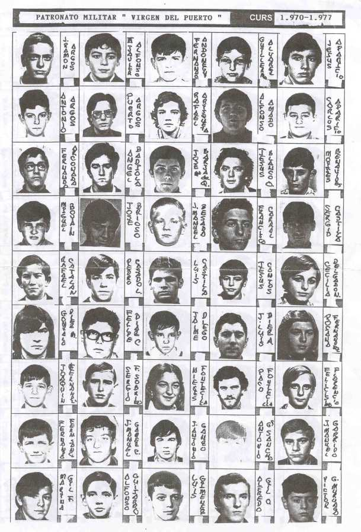

Aquí estamos la promoción 1970-1977; muchos veniamos de Quintana ( Simón, Cani, Cantos, Jiménez, Casado, Soto,Santa Brígida, Cantero, Sanz, De la Rosa, Morales, Romero, Mirallas ) , otros no lograron acabar , las chicas , qué ilusión, se incorporaron en cuarto de bachiller, 1974, y algunos , desgraciadamente han fallecido, descansen en paz, son : Jesús Cantos de Viejo ( Chuchi ), José Antonio Pérez Las Heras ( el de Jaca ), Javier Lobo Marín ( qué buena persona ), Fernando Sainz Cantero ( sencillo y cariñoso ), José María Borja de Quiroga ( inteligente ), Jaime Diego Fernández ( externo, pedazo centrocampista en futbool ), Juan José Umpierrez Ferreira ( externo, sencillo y silencioso )
 |
SIGUE -->